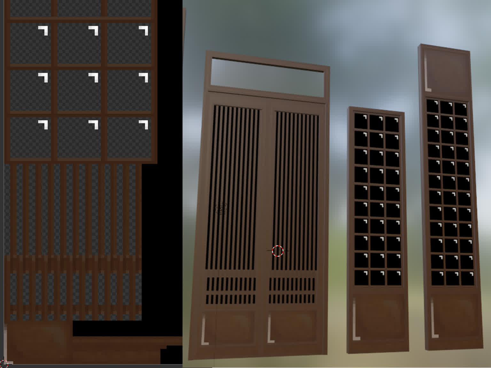
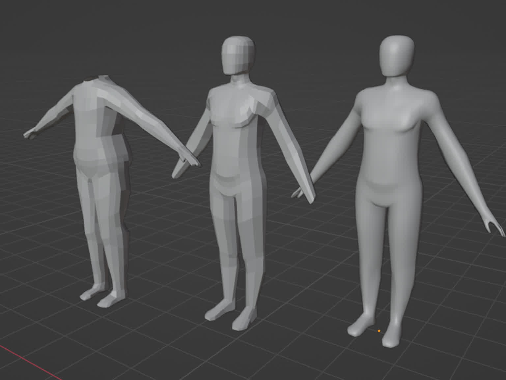

Blender and Godot
3D Modelling, UVing, Texturing, Animating Ceres Miller, 2022-2023Learning new things from scratch is a long process hampered mostly by not knowing what best practices are, while at the same time developing an efficient workflow tailored to your own skills and intrests. If you aren't being taught best practices and a workflow, progress is slow.
However I'm motivated by want to be able to create, even if it takes a long time. Working out a style, standards and a workflow is done over many years of trial and error.
 It's easy to think that lowering the resolution of a model will cover up roughness, but it ends up making work more difficult. You end up fiddling with little details to get the effect right, working pixel by pixel, and taking up a lot of time.
It's easy to think that lowering the resolution of a model will cover up roughness, but it ends up making work more difficult. You end up fiddling with little details to get the effect right, working pixel by pixel, and taking up a lot of time.
 Working in very high resolutions ironically speeds up the process. Sculpting in Blender requires working at hundreds of thousands of vertices, but when exporting, the model can be decimated to make it more manageable.
Working in very high resolutions ironically speeds up the process. Sculpting in Blender requires working at hundreds of thousands of vertices, but when exporting, the model can be decimated to make it more manageable.
Millipede's remeshing tool, via Rhino, helped rationalise a gigantic mesh into something that could be worked with. This duck had to be hollow and fit with other parts, but the mesh had to have enough detail that sanding after printing would produce a good finish.

Because of not knowing better, I UVed these models by placing every single face's UV coordinates by hand on the texture, pixel by pixel. Despite being such simple looking models, I spent days of work on these, fiddling with the textures and the topology granularly.
 Godot's default ambient lighting has a bluish colour that tints everything and makes textures look flat. Getting the right appearance is also trial and error, fiddling with roughness and metallic maps on models and environmental and shader settings.
Godot's default ambient lighting has a bluish colour that tints everything and makes textures look flat. Getting the right appearance is also trial and error, fiddling with roughness and metallic maps on models and environmental and shader settings.
 Making a bright flame and a candle glow makes use of emissive map textures that tell the renderer where light is shining. The flame is a flat image that rotates to face the camera, and wiggles by spawning and fading away over and over.
Making a bright flame and a candle glow makes use of emissive map textures that tell the renderer where light is shining. The flame is a flat image that rotates to face the camera, and wiggles by spawning and fading away over and over.

Multiple attempts have to be made to develop something you're happy with. These were done over about 2 weeks and developed to be rigged. Every successive attempt fixes problems with the previous and helped me understand more about how human retopology is supposed to work.